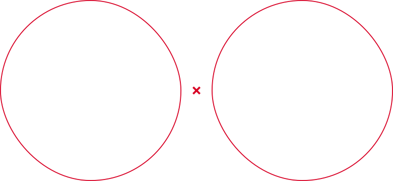

<section class="partner" id="partner">
    <div class="container">
        <div class="section__header partner__header">
            <div class="section__header-text">Партнёр розыгрыша</div>
            <div class="section__header-title">
                <h2 class="section__header-title-text"><span>ЖК Чемпион,</span> Застройщик ООО СЗ ДОМ АРТ ДВ</h2>
                <a href="#" class="section__header-title-link">
                    Перейти на сайт застройщика
                    <svg width="22" height="19" viewBox="0 0 22 19" fill="none" xmlns="http://www.w3.org/2000/svg">
                        <path d="M1 9.49996H21M21 9.49996L12.6667 1.16663M21 9.49996L12.6667 17.8333" stroke="white" stroke-width="2" stroke-linecap="round" stroke-linejoin="round" />
                    </svg>
                </a>
            </div>
        </div>
        
        <div class="partner__wrapper">
             <div class="partner__left">
                
             </div>

             <div class="partner__right">
                <div class="partner__desc">«ДОМ АРТ» сотрудничает с проверенными и надёжными подрядчиками, а также с ведущими банками нашего региона по предоставлению ипотечного кредитования, что гарантирует надёжность и своевременность сдачи объекта.</div>
                <div class="partner__desc">ЖК Чемпион состоит из пяти 11-этажных панельных домов, расположенных в экологически чистом районе города. ЖК Чемпион это: двор без машин; лоджии с панорамным остеклением в «пол»; детские и спортивные площадки; колясочные; грузопассажирские лифты; огнеупорный вентилируемый фасад, отделанный керамогранитом. Живи свою лучшую жизнь с ЖК Чемпион!</div>
             </div>
        </div>
    </div>
</section>


